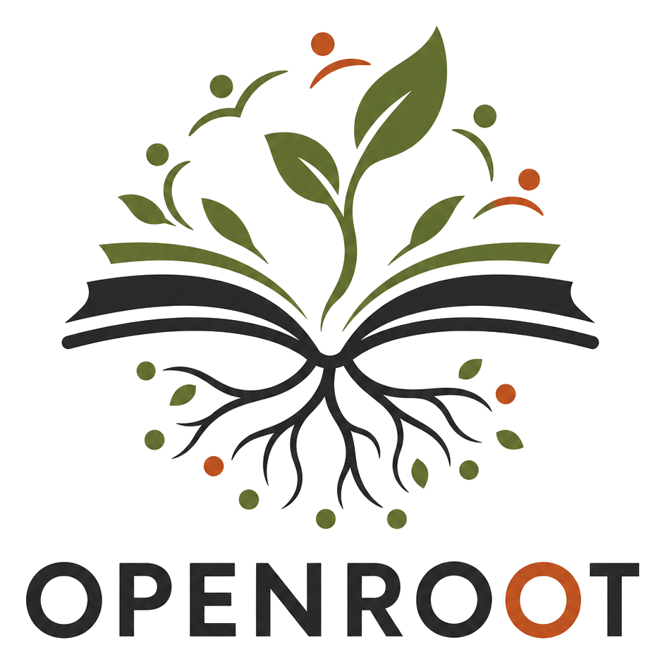
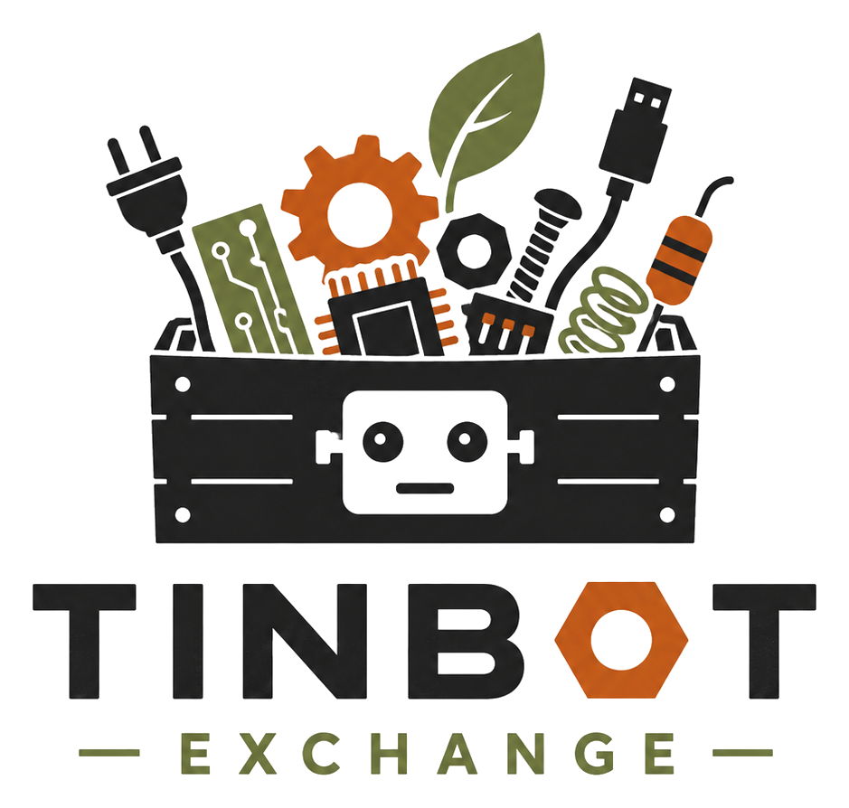
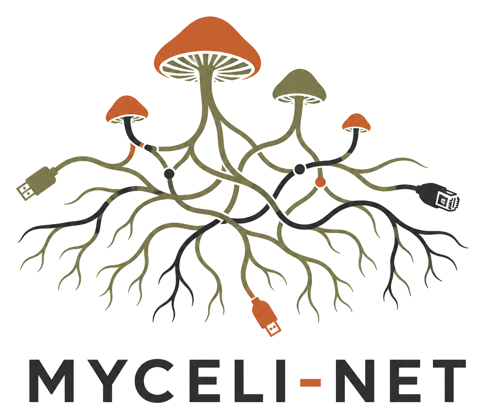

A community infrastructure project for local AI literacy, reclaimed
hardware, offline networks, and practical independence from centralized
AI systems, rooted in regenerative technology, human-AI symbiosis, and
shared power.
The Local Intelligence Project is building an ecosystem for Digital Terraforming: making the intelligence landscape livable and intuitive, and rooting powerful tools back into real communities before they become distant, expensive, or fully centralized.
AI is already helping people do things they could not do before. It can be an accessibility aid, a research engine, and a creative tool. But it also comes with tradeoffs: energy use, water use, hardware waste, weak oversight, and companies racing ahead like the environment is someone else's problem.
Digital Terraforming is the practical response: recycle compute, reclaim old hardware, teach AI literacy, build offline networks, and make local tools people can understand, repair, and share. The goal is not to opt out of intelligence. The goal is to grow community-owned systems that keep power closer to the people using them.
Initiatives
The Three Initiatives
We build together.

OpenRoot
Share the intelligence.
Open-source AI education, local models, civic literacy, tools, documentation, and monthly meetups for builders and learners.
Host OpenRoot meetups and skill shares in person and online
Publish beginner guides and monthly bulletins
Cover civic topics like data centers, energy, water, and access

Tinbot Exchange
Recycle the compute.
A dedicated salvage and sourcing channel for trading, collecting, and repairing old hardware: sensors, robotics parts, small computers, and useful components.
For project initiatives and personal builds
Member priority and BOLOs
Emphasis on barter + trading

Myceli-Net
Keep the signal online.
Mesh networks, offline comms, and low-power local signal systems for community resilience, disaster prep, and platform-independent coordination.
Research Meshtastic and low-power relay setups
Publish starter-kit notes and build logs
Keep public maps approximate and anonymous for privacy and safety
Long-term vision
Branches, Solar Links, and a living mesh.
The long-term vision is to grow branches across the United States until local groups can connect into a living mesh of shared skills, trusted tools, and practical independence from centralized AI companies.
As branches mature, some may become Solar Links: physical community nodes with gardens, repair benches, local servers, green mini data centers, mesh relays, workshops, and shared land for building together. Not everyone has to live there. The purpose is to create grounded places where people can meet, repair tools, grow food, run local compute, and practice technological independence as a community.
The first physical pilots begin in the United States, while the learning commons stays open worldwide for anyone who wants to adapt the guides in their own region.
The first step is a focused pilot: shared trust, useful documentation, reclaimed hardware, local learning, and a few real builds people can repeat.
Solar Link concept: repair benches, gardens, local compute, and offline relays in one grounded place.
Ways to participate
Public, partner, or branch.
There are a few ways to step in, from following along publicly to building trusted local capacity over time.
01 / Open
Public participants
Anyone can follow along from anywhere in the world. Join open calls, test guides, share useful links, submit Tinbot finds, bring local observations, and learn with the project without needing approval or being based in the U.S.
02 / Aligned
Recognized partners
Partners are aligned shops, farms, homesteads, makerspaces, libraries, educators, builders, or local groups that help source hardware, host sessions, test guides, offer skills, or support one of the core initiatives.
03 / Trusted
Official branches
Official branches are trusted local groups approved to represent a region or initiative. They are trusted with local coordination, shared documentation, regional outreach, and turning agreed-upon projects into visible community progress.
You might be a good fit if
You build, repair, teach, grow, document, organize, or test practical systems. We are looking for people who care about open-source AI, reclaimed hardware, local resilience, offline networks, robotics, computing, farming, outreach, repair, or civic life, and who are reliable enough to help build trust around branch work and future local nodes.